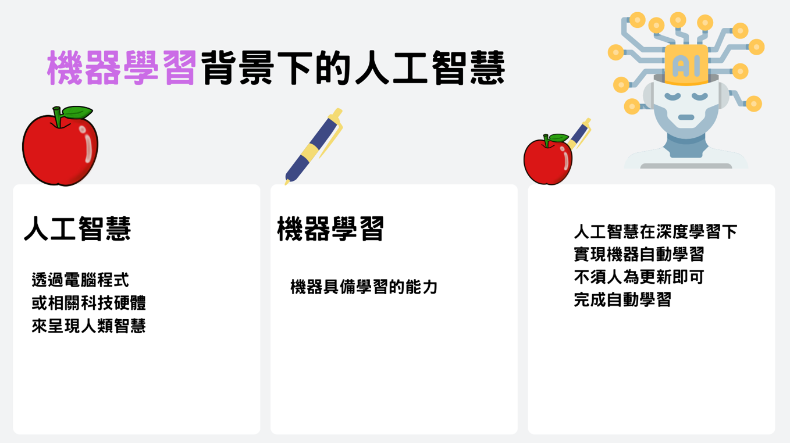

定義與概述
什麼是機器學習背景下的人工智慧
過往資訊系統大多以邏輯思維來設計，這會受限於人需要設計處理的邏輯流程，但若遇到如影像辨識、文章處理之類應用，很難描述具體邏輯規則，這就出現自動化資訊系統的限制。
我們若能夠提供電腦資料及期待處理的結果，電腦就能夠自動地學習這些資料，然後來推論我們期待的結果，這樣就可以處理人類很難處理的大量且龐雜資料，自動學習找出規則，給我們期待的結果，這就是學習思維，也是讓電腦工作的另類方式。

Copyright © 16+26 All Rights Reserved.